|
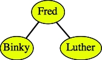 | 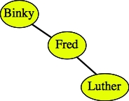 | 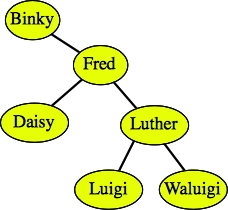 |
Trees are often a very natural way to represent hierarchies. For example, the mathematical expression:
| 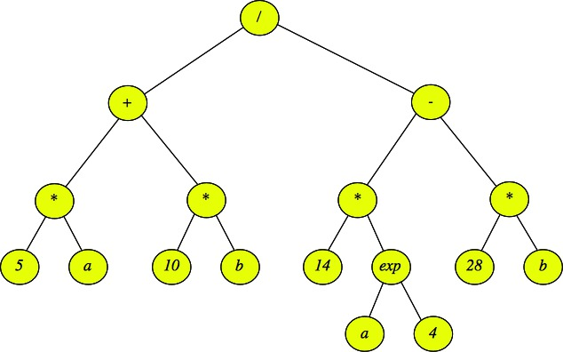 |
Using tree terminology, the external, (or leaf) nodes are either variables or values, and the internal nodes are operators.
Pre-OrderTo visit a node:
Example on the above tree: Print "/" Print "+" Print "*" Print "5" Print "a" Print "*" Print "10" Print "b" Print "-" Print "*" Print "14" Print "exp" Print "a" Print "4" Print "*" Print "28" Print "b" |
Post-OrderTo visit a node:
Example on the above tree: Print "5" Print "a" Print "*" Print "10" Print "b" Print "*" Print "+" Print "14" Print "a" Print "4" Print "exp" Print "*" Print "28" Print "b" Print "*" Print "-" Print "/" |
In-Order (Binary only)To visit a node:
Example on the above tree: Print "5" Print "*" Print "a" Print "+" Print "10" Print "*" Print "b" Print "/" Print "14" Print "*" Print "a" Print "exp" Print "4" Print "-" Print "28" Print "*" Print "b" |
Example Question: "Which of the above traversals would allow you to evaluate the expression of the above tree?"
Answer: A post-order traversal -- for each operator in an internal node, you need to first evaluate each of its children before you can perform the operation. For example, you need to evaluate the left subtree of "/" and then the right subtree before you divide the two answers to get the final evaluation of the expression.
Here are some examples of binary search trees that hold strings:
|
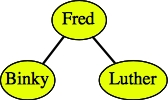 | 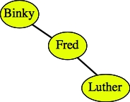 | 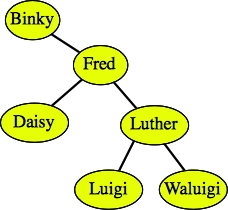 |
As demonstrated by the second two trees above, there can be more than one binary search tree that corresponds to the same data.
Here are two examples of trees that are not binary search trees:
| 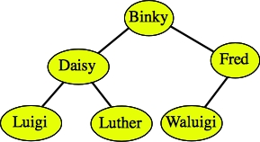 Daisy, Luigi and Luther are all greater than Binky. |
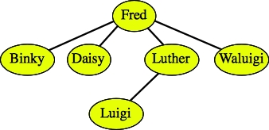 The tree is not binary. |
Binary search trees have nice properties. For example, you can sort the data by performing an in-order traversal. You can also find a piece of data simply by traversing a single path from the root to the data, or to where the data would be. For example, in the tree:
If I want to find Luigi, what I do is start at the root of the tree, and compare it to Luigi. If it equals Luigi, then I'm done. If not, and Luigi is less than the node's value, then I recursively continue the process on the tree's left child. If Luigi is greater than the node's value, then I instead recursively continue the process on the tree's right child. If I ever get to a point where the node has no child for me to search on, I can conclude that the value is not in the tree.
Continuing the example of finding Luigi, I would:
For example, were we to insert Calista into the above tree, we try to find the string. We fail at Daisy's left child, which doesn't exist. Therefore, we create a node for Calista and insert it as Daisy's left child:
| 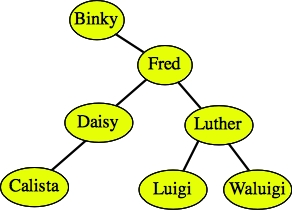 |
To insert duplicate values, do the same procedure, only if you find the value, you continue searching either on the left or the right child, as if you didn't find the key. For example, if you wanted to insert Binky into the tree again, you would either put it as Binky's left child or Calista's left child:
| 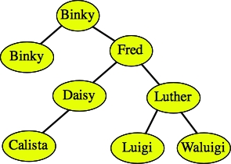 | 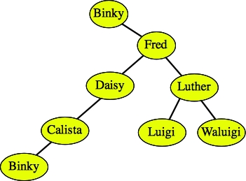 |
Deletion is the trickiest. To delete a node, you must consider three cases. Let's consider the tree below as an example:
Case 1: The node has no children (it's a leaf node). You can simply delete it. I won't draw an example, but you should see very easily that deleting Calista, Luigi or Waluigi just removes them from the tree.
Case 2: The node has just one child. To delete the node, replace it with that child. I draw two examples below:
| 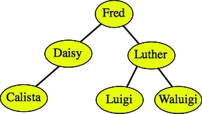 After deleting Binky. |
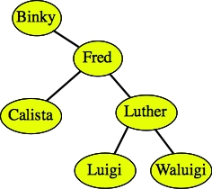 After deleting Daisy. |
Case 3: The node has two children. In this case, you find the node in the tree whose value is the greatest value less than (or equal to) the node's value. That will be the rightmost node in the subtree rooted by the left child. That node will not have a right child. First, delete it. Then use it to replace the node that you are deleting.
Alternatively, you can replace it with the leftmost node in the tree rooted by the node's right child. Both will work.
For example, let's delete Fred from the tree below:
| 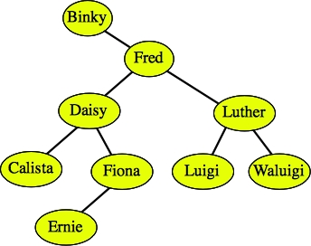 |
Since Fred has two children, we find the rightmost node in the tree rooted by Fred's left child. That is the node Fiona. We first delete Fiona:
And then we replace Fred with Fiona:
| 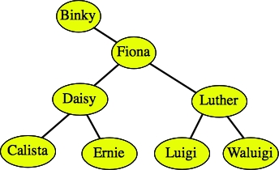 |
A second example is easier, but sometimes confusing -- suppose we want to delete Luther. Since Luther has two children, we find the rightmost node in the tree rooted by Luther's left child. Since there is only one node in that tree, that's the one we delete: Luigi. We then replace Luther with Luigi:
| 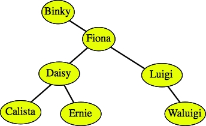 |
#include <iostream>
#include <vector>
using namespace std;
class BSTNode {
public:
BSTNode *left;
BSTNode *right;
BSTNode *parent;
string key;
void *val;
};
class BSTree {
public:
BSTree();
~BSTree();
int Insert(string key, void *val);
void *Find(string key);
int Delete(string key);
void Print();
int Size();
int Empty();
vector <void *> Sorted_Vector();
protected:
BSTNode *sentinel;
int size;
vector <void *> array;
void recursive_inorder_print(int level, BSTNode *n);
void recursive_make_array(BSTNode *n);
void recursive_destroy(BSTNode *n);
};
|
This is a little like the Dlist API in the previous lecture, with some extra bells and whistles. Let's first go over the methods:
Person *p; |
And suppose you want to insert the key "Fred" and the val p into a tree t. Then you would do it as follows:
t.Insert("Fred", (void *) p);
|
The "(void *) p" part tells the compiler "I know you want a (void *) and I'm giving you a (Person *). It's all good." If you don't put the "(void *)" in, the compiler will yell at you.
We use the (void *) for flexibility -- it allows you to store any pointer in the val field. The STL of course, does this in a different and more type-safe way. Using a (void *) is an "old school" C trick.
Insert() returns whether the key was inserted. We're going to disallow inserting duplicate keys.
I have an example program in bstree_test.cpp. This is a program that gives you a command line tool for managing a tree of Persons:
class Person {
public:
string name;
string phone;
string ssn;
};
|
You run it with a prompt on the command line ("-" for no prompt), and it accepts lines of commands on standard input. The commands are INSERT, FIND, DELETE, PRINT, EMPTY, SIZE and SORT.
Take a look at how the code that inserts people into the tree. Each line of input is put into the vector sv of the individual words on a line:
} else if (sv[0] == "INSERT") {
if (sv.size() < 4) {
printf("usage: INSERT name phone ssn\n");
} else {
p = new Person;
p->name = sv[1];
for (i = 2; i < sv.size()-2; i++) {
p->name += " ";
p->name += sv[i];
}
p->phone = sv[i];
p->ssn = sv[i+1];
if (!t.Insert(p->name, (void *) p)) {
printf("%s not inserted.\n", p->name.c_str());
delete p;
}
}
}
|
The people are inserted with their names as keys and the Person * as vals. Below is an example of eight INSERT calls and a PRINT:
UNIX> cat input-easy.txt
INSERT Binky 944-867-2246 165-79-8849
INSERT Fred 026-631-5520 826-96-9094
INSERT Luther 462-055-3150 827-30-6292
INSERT Waluigi 193-149-4333 106-62-2934
INSERT Daisy 257-554-8530 481-12-6340
INSERT Luigi 018-992-9715 512-23-5507
INSERT Ernie 808-602-6582 702-11-9340
INSERT Calista 457-440-4397 076-91-9105
PRINT
UNIX> bstree_test - < input-easy.txt
Waluigi
Luther
Luigi
Fred
Ernie
Daisy
Calista
Binky
UNIX>
The indentation of the PRINT helps you visualize the tree. If you do a screen
shot and rotate it 90 degrees clockwise, you can turn it into a tree:
| 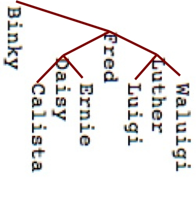 | which is equal to |
Given the description of insertion and deletion above, make sure that you understand the output of the following sequence of calls:
UNIX> bstree_test -
INSERT Binky 944-867-2246 165-79-8849
INSERT Fred 026-631-5520 826-96-9094
INSERT Luther 462-055-3150 827-30-6292
INSERT Waluigi 193-149-4333 106-62-2934
INSERT Daisy 257-554-8530 481-12-6340
INSERT Luigi 018-992-9715 512-23-5507
INSERT Ernie 808-602-6582 702-11-9340
INSERT Calista 457-440-4397 076-91-9105
PRINT
Waluigi
Luther
Luigi
Fred
Ernie
Daisy
Calista
Binky
INSERT Alvin 345-654-3434 242-55-4444
PRINT
Waluigi
Luther
Luigi
Fred
Ernie
Daisy
Calista
Binky
Alvin
DELETE Luther
PRINT
Waluigi
Luigi
Fred
Ernie
Daisy
Calista
Binky
Alvin
DELETE Luigi
PRINT
Waluigi
Fred
Ernie
Daisy
Calista
Binky
Alvin
DELETE Fred
PRINT
Waluigi
Ernie
Daisy
Calista
Binky
Alvin
QUIT
UNIX>
class BSTNode {
public:
BSTNode *left;
BSTNode *right;
BSTNode *parent;
string key;
void *val;
};
|
Besides storing a key and a val, each BSTNode contains a pointer to its left child, right child and parent. As with the Dlist, we are going to have a sentinel node that simplifies the code. The only part of the sentinel that we're going to use is its right pointer. That is going to point to the root of the tree. Rather than point to NULL, pointers that should point to nothing will point to the sentinel. Thus, when we create the following tree:
UNIX> bstree_test - INSERT Fred 026-631-5520 826-96-9094 INSERT Binky 944-867-2246 165-79-8849 INSERT Luigi 462-055-3150 827-30-6292 QUIT UNIX>It is going to have the following representation:
| 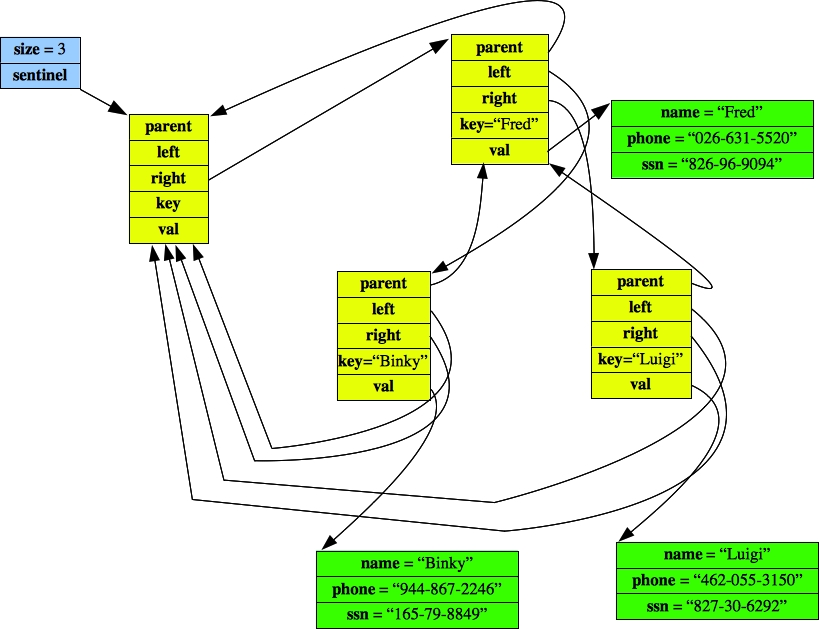 |
The constructor, size() and Empty() are straightforward as usual. The empty tree has sentinel->right point to sentinel:
BSTree::BSTree()
{
sentinel = new BSTNode;
sentinel->parent = NULL;
sentinel->left = NULL;
sentinel->right = sentinel;
size = 0;
}
|
int BSTree::Size()
{
return size;
}
|
int BSTree::Empty()
{
return (size == 0);
}
|
The implementation of Find() is a simple while loop that either finds the key or returns NULL when the sentinel has been reached:
void *BSTree::Find(string s)
{
BSTNode *n;
n = sentinel->right;
while (1) {
if (n == sentinel) return NULL;
if (s == n->key) return n->val;
if (s < n->key) {
n = n->left;
} else {
n = n->right;
}
}
}
|
Insert() starts similarly to Find(). If it actually finds the key, then it returns zero. Otherwise, the important thing is finding the parent of the newly created node. Once the parent is found, the new node is created, its left and right pointers are set to be the sentinel, and its parent pointer is set to be its parent. At this point, all of its pointers are correct -- the only thing that needs to be fixed is the parent -- either the new node is the left or the right child. Once that is figured out, the pointer is set, and we return one:
int BSTree::Insert(string s, void *val)
{
BSTNode *parent;
BSTNode *n;
parent = sentinel;
n = sentinel->right;
while (n != sentinel) { // This loop finds the parent.
if (n->key == s) return 0;
parent = n;
if (s < n->key) {
n = n->left;
} else {
n = n->right;
}
}
n = new BSTNode; // Create the new node and set all of its pointers.
n->key = s;
n->val = val;
n->parent = parent;
n->left = sentinel;
n->right = sentinel;
if (parent == sentinel) { // Set the parent's left/right pointer.
sentinel->right = n;
} else if (s < parent->key) {
parent->left = n;
} else {
parent->right = n;
}
size++; // All done.
return 1;
}
|
The tough code is Delete(). The first thing that we have to do is find the node. Once we do, we consider the three cases that are described above. If the node has no left child, then we replace the node with its right child. The way we "replace" the node is we set the parent's link to that node to equal the right child. Otherwise, if the node has no right child, then we replace it with its left child.
Those are the easy cases. The hard case is when the node has two children. In that case, we find the maximum node whose key is less than the node's key (There are no duplicates, which simplifies matters). This node is in mlc. Now, we recursively delete mlc, and then replace n with mlc's key and val:
int BSTree::Delete(string s)
{
BSTNode *n, *parent, *mlc;
string tmpkey;
void *tmpval;
n = sentinel->right; // Find the node.
while (n != sentinel && s != n->key) {
if (s < n->key) {
n = n->left;
} else {
n = n->right;
}
}
if (n == sentinel) return 0;
parent = n->parent;
if (n->left == sentinel) { // If the node has no left child, then
if (n == parent->left) { // replace it with its right child.
parent->left = n->right;
} else {
parent->right = n->right;
}
n->right->parent = parent;
delete n;
size--;
} else if (n->right == sentinel) { // If the node has no right child, then
if (n == parent->left) { // replace it with its left child.
parent->left = n->left;
} else {
parent->right = n->left;
}
n->left->parent = parent;
delete n;
size--;
// Otherwise, do case 3, as explained above.
} else {
for (mlc = n->left; mlc->right != sentinel; mlc = mlc->right) ;
tmpkey = mlc->key;
tmpval = mlc->val;
Delete(tmpkey);
n->key = tmpkey;
n->val = tmpval;
}
return 1;
}
|
We need to be really careful making that recursive call. If we set n->key equal to tmpkey before making the recursive call, we'd delete the wrong node. Also, since the recursive call deletes mlc, we can't use it following the recursive call -- this is why we stored mlc->key and mlc->val in tmpkey and tmpval. Finally, since the recursive call decreases the size, we don't do it here.
The last calls are the traversals. We do these recursively with protected methods (we don't want to let others make these calls -- they are just for us). Start with Print() -- it calls recursive_inorder_print() on the root of the tree (in sentinel->right). Recursive_inorder_print() does an in-order traversal in reverse order -- it calls itself recursively on its right child, then it prints the node, and finally it calls recursively on its left child. It always stops when it reaches the sentinel.
void BSTree::Print()
{
recursive_inorder_print(0, sentinel->right);
}
void BSTree::recursive_inorder_print(int level, BSTNode *n)
{
if (n == sentinel) return;
recursive_inorder_print(level+2, n->right);
printf("%*s%s\n", level, "", n->key.c_str());
recursive_inorder_print(level+2, n->left);
}
|
The other two recursive traversals are creating the sorted vector and the destructor. The first performs an in-order traversal, while the second preforms a post-order traversal. That is necessary, because we can't use n->left or n->right after we've deleted n. Granted, we could store them in temporary pointers, delete n and then recursively delete the temporary pointers, but the post-order traversal is easier.
BSTree::~BSTree()
{
recursive_destroy(sentinel->right);
delete sentinel;
}
void BSTree::recursive_destroy(BSTNode *n) // Post-order traversal.
{
if (n == sentinel) return;
recursive_destroy(n->left);
recursive_destroy(n->right);
delete n;
}
vector <void *>BSTree::Sorted_Vector()
{
array.clear();
recursive_make_vector(sentinel->right);
return array;
}
void BSTree::recursive_make_vector(BSTNode *n) // In-order traversal.
{
if (n == sentinel) return;
recursive_make_vector(n->left);
array.push_back(n->val);
recursive_make_vector(n->right);
}
|
A final comment on the destructor. Should it also delete the val's? The answer is no -- it's good form only to delete what you create with new. What if the user of this data structure didn't create the val's with new, or what if the user is holding them in a second data structure? Then it would be really bad form for the destructor to delete it!